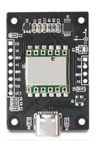
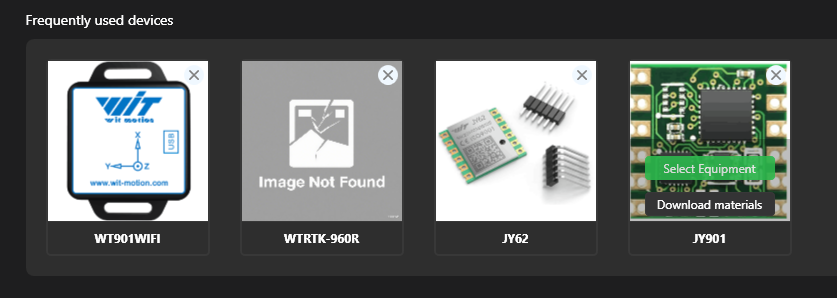
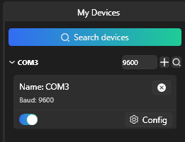
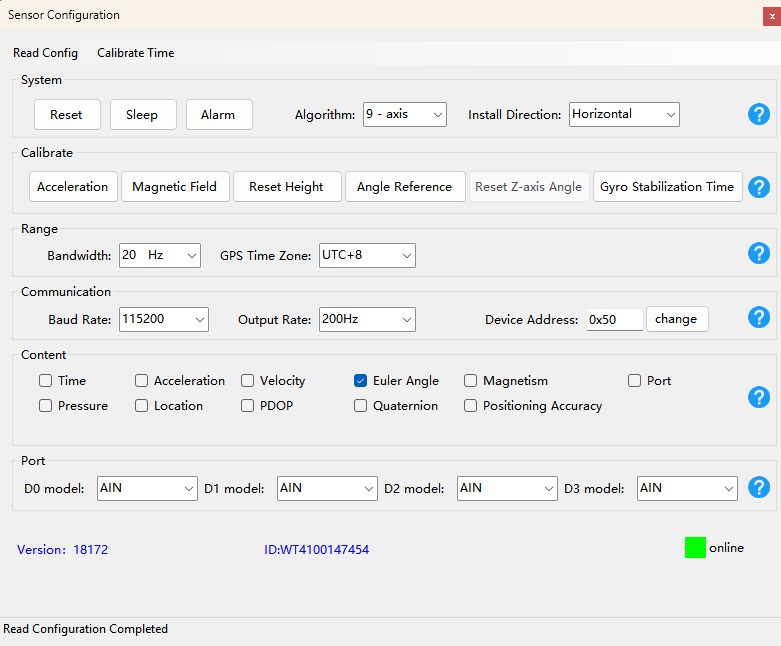

IMU configuration

Requirements
A Windows PC
The IMU Sensor
A USB-A to USB-C cable
Configuration
Connect the IMU to your PC
Download and start WitMotion PC Software
Select the JY901 device in the “Frequently used devices” section

Your device should appear on the left

Open the config menu and configure your device as follows :
